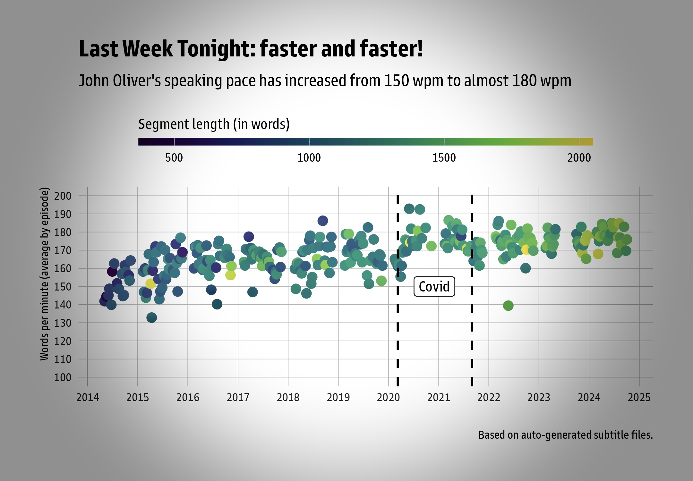
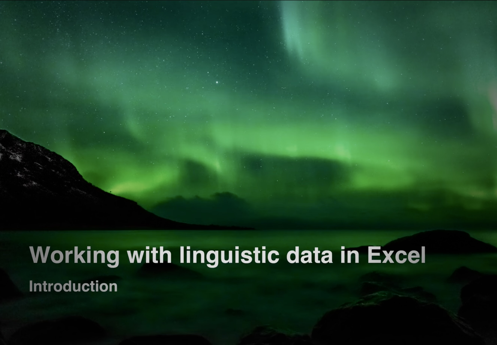
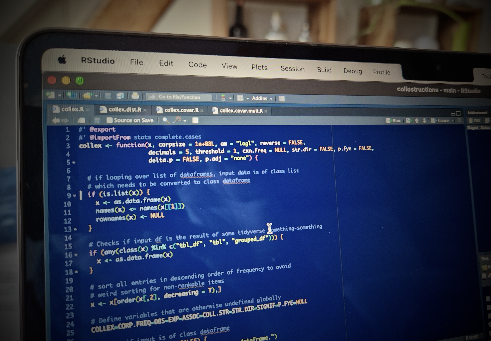

What makes passengers (un)happy?
The quality of human interaction —
over
gimmicks, perks & infrastructure.
For over 15 years, I have been solving complex problems in matrix organisations where resources are limited, stakeholders have competing interests, signals are ambiguous and solutions are never obvious.
Across every role I’ve held, the challenge has been the same:
understand what matters, remove what’s in the way.
The context has changed, the underlying work hasn’t.
Coordinating cross-functional teams, removing operational barriers and redesigning processes in routine and crises. Connecting people, technology & requirements in regulated environments.
People grow with good guidance. I meet them where they stand and take them on practical learning journeys that build confidence, encourage tool adoption and support lasting change.
Insights by making best use of messy data. I use statistical modelling to uncover patterns and hidden factors that improve processes and support better decisions.

Helping people embrace new ways of working. Change and operational success depends on clear communication and user-centred implementation.
Seeing the bigger picture without losing sight of the details. Understanding how people, processes and technology interact to create sustainability.
Turning complexity into clarity. Making technical concepts understandable and creating a shared understanding across diverse audiences.
Keeping momentum when resources are limited. Balancing competing priorities, navigating uncertainty and delivering outcomes with an agile mindset.
Learning through openness and accountability. Fostering environments where feedback and learning from mistakes strengthen people, teams and organisations.
Curiosity drives improvement. Quickly mastering new domains, technologies and methodologies. Sharing knowledge to strengthen teams and organisations.
A selection of private and professional projects.
be curious | be creative with limited resources | ask the right
questions
embrace messy data | remain critical | adjust to
your audience
The quality of human interaction —
over
gimmicks, perks & infrastructure.


Self-paced learning tutorial for 1st year students used in flipped classroom teaching.

Attraction between words and sentences.
Runs 10x faster
than comparable solutions.
Academic titles rarely describe what people actually do. Mine
included.
But they capture my journey as an operations
specialist, parallel projects and change manager, system(s) adopter,
ITSM & release coordinator, curriculum designer, trainer, data
scientist, and people enabler.
The posts in Neuchâtel, Leipzig and Zurich overlap – that’s not a typo, but a common occurrence in academia, where people often contribute at multiple institutions simultaneously. It’s not just what taught me to juggle priorities and adapt quickly, but also how I learnt my favourite Swiss word from the realm of labour law, Mutationsverfügung.
Professional Scrum Master I (PSM I)
Short courses in agile principles · change management · operations and risk management · regulatory compliance · team-building and conflict resolution
This is a private, non-commercial website. My contact options are
below.
I am neither a webdev nor an html wizard — but with
what I remember about html & css from the pre-Wordpress days,
I know how to effectively persuade AI to help me adjust a
lovely and free template. Else, this website is my own work.